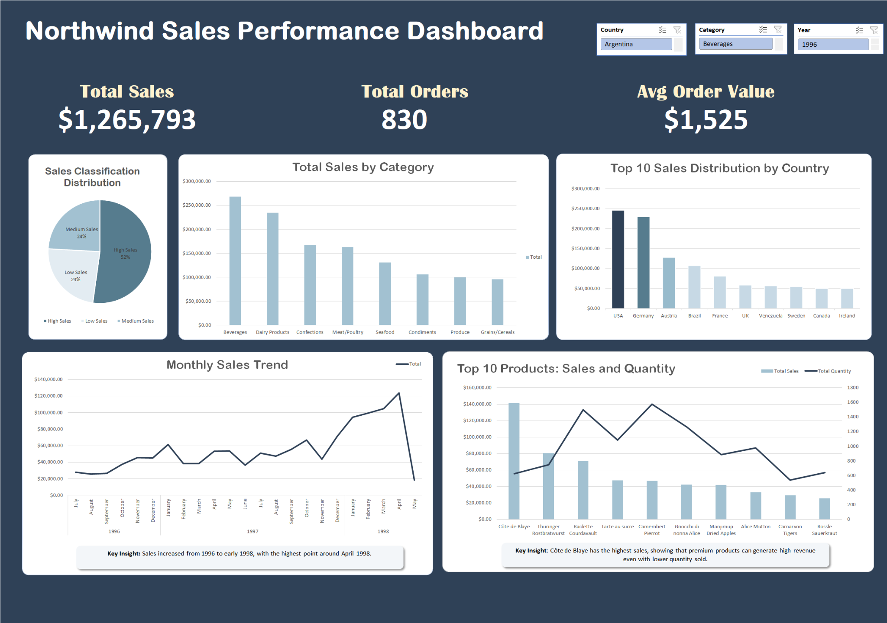

PROJECT 04 / DATA ANALYTICS
Northwind Sales Performance Analysis
Analyzing historical sales transactions to evaluate business performance, identify revenue patterns, and support data-driven decisions using Microsoft Excel.
01 / OVERVIEW
Understanding business performance through data.
This project analyzes Northwind's historical sales data using Microsoft Excel to evaluate overall business performance, identify sales patterns, and explore opportunities for improvement.
The analysis combines multiple related datasets to examine revenue, order activity, product categories, and key business performance indicators.
02 / DATA PREPARATION
Connecting data across business operations.
The analysis uses six related datasets to provide a comprehensive view of Northwind's sales transactions and business operations.
- Orders — transaction and order information.
- Order Details — purchased products and quantities.
- Products — product information and pricing.
- Categories — product classifications.
- Customers — customer information.
- Employees — employee information.
These datasets provide the foundation for analyzing sales performance through PivotTables, Excel calculations, and structured reporting.
03 / SALES DASHBOARD
Measuring sales performance.
A KPI-based Excel dashboard summarizes key performance indicators, helping users understand overall sales activity and business performance.
Sales Revenue
Customer Orders
Average Revenue per Order
Total quantity sold: 51,317 units. KPI values are based on the Northwind Excel analysis workbook.

04 / PIVOT ANALYSIS
Identifying sales trends and category performance.
Pivot-based analysis was used to summarize sales performance across product categories and provide a clearer understanding of revenue contribution.
Beverages generated the highest total sales, approximately 267,868, followed by Dairy Products at approximately 234,507.
Category-level analysis helps identify major revenue contributors and supports product performance evaluation.
05 / ADVANCED EXCEL ANALYSIS
Exploring analytical scenarios.
Beyond traditional PivotTable reporting, the workbook includes Cube Function and What-If Analysis worksheets to support additional business analysis.
- Cube Functions — retrieve analytical values from the workbook's data model.
- What-If Analysis — explore how changes in input assumptions affect estimated sales outcomes.
- Pivot Analysis — organize and summarize transaction data into meaningful business metrics.
06 / KEY FINDINGS
From transactions to business insights.
The analysis provides an overview of Northwind's sales performance, highlighting total revenue, order volume, average order value, and differences in category-level sales.
By combining KPI reporting, PivotTables, and scenario analysis, this project demonstrates how Microsoft Excel can transform transactional data into structured information for business decision-making.